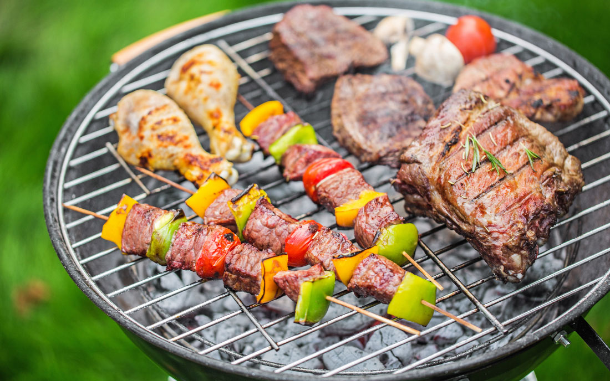
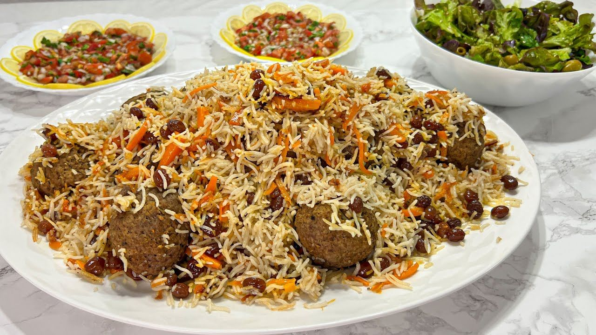

These Are My Favorite Foods 😋

It is social entertainment, at which meats, fish, or fowl
so it's very nice food and people eat more outside than
at home, I also eat at outside this food sometimes alone
and sometimes whit my friends or my family.

This is chicken and I like it beacuse it's very delicious
and It’s so simple, you’ll love homemade even more
than store-bought rotisserie chicken! With minimal prep
work and your own fave seasonings,

This is a delicious and famouse meal in Afghanistan.
In our country Afghanistan it's very nice and delicious
meal When there is a widing or metting they make it.
beacuse it is a certain meal in our country.